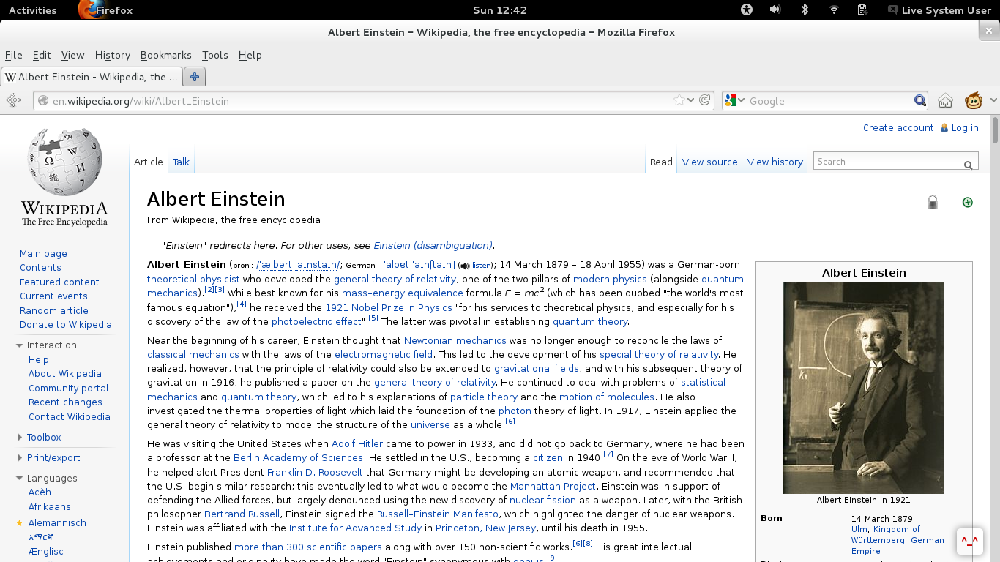
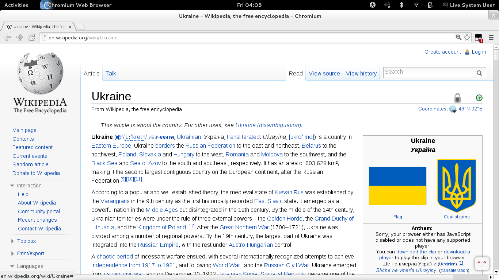
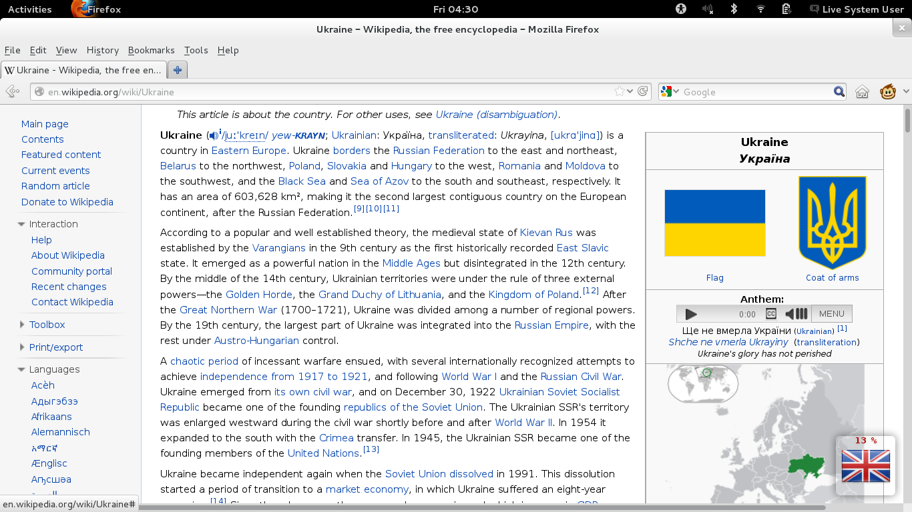
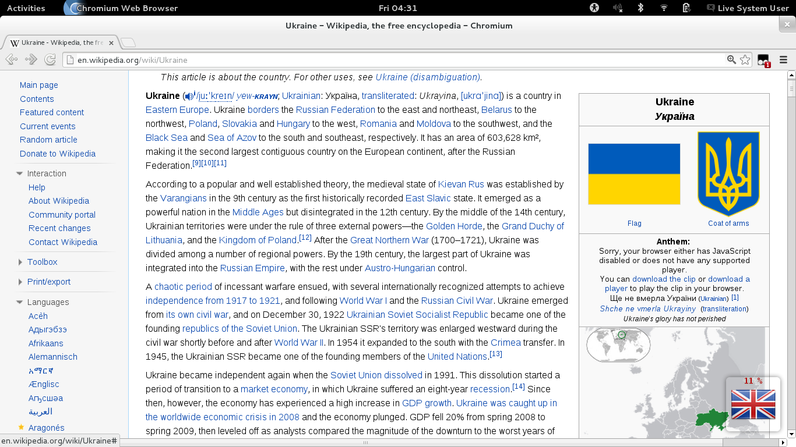
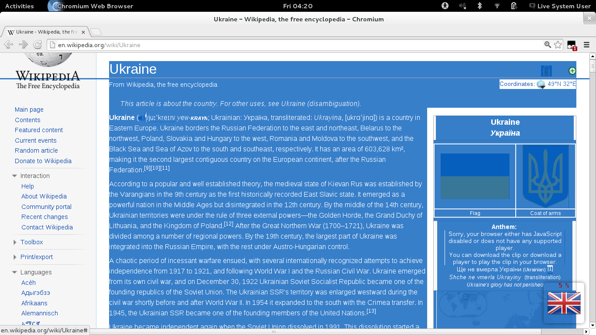
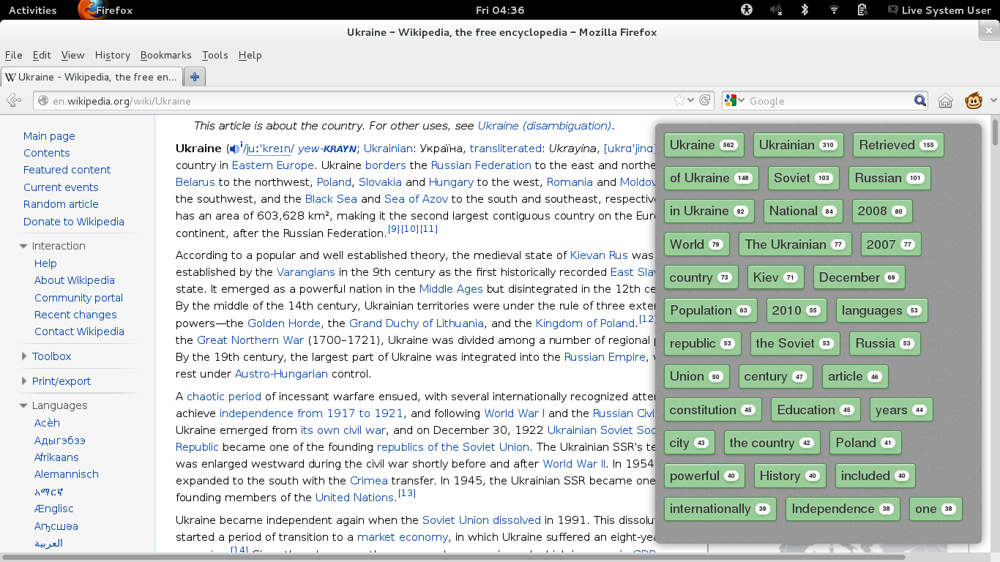
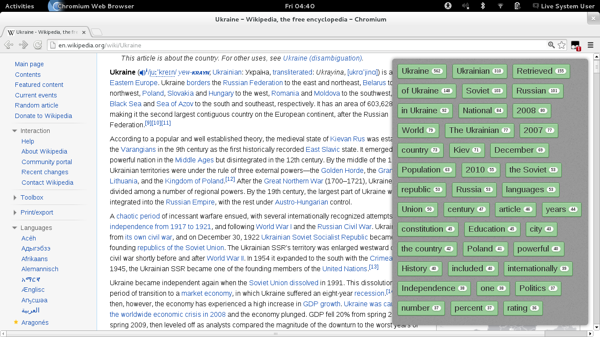
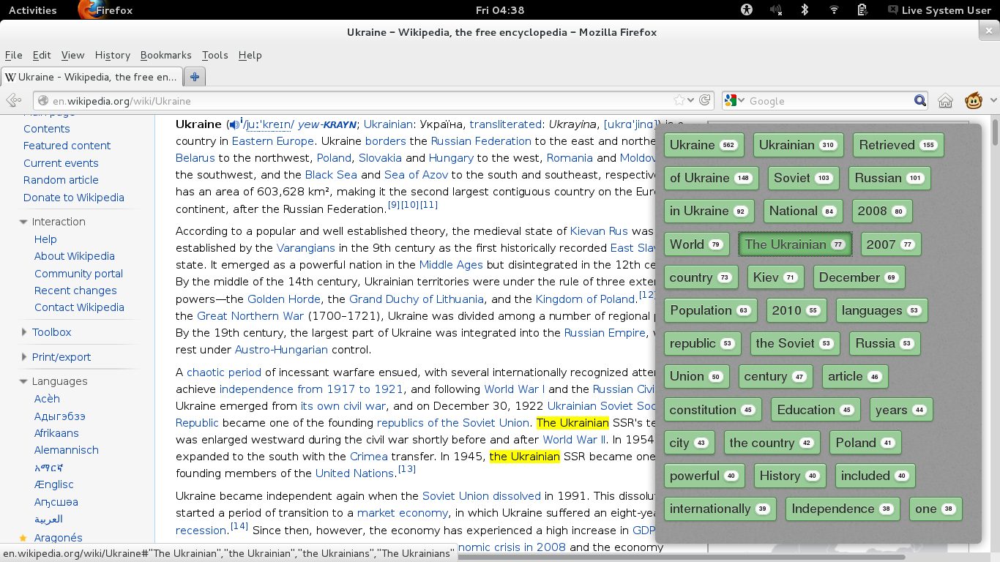
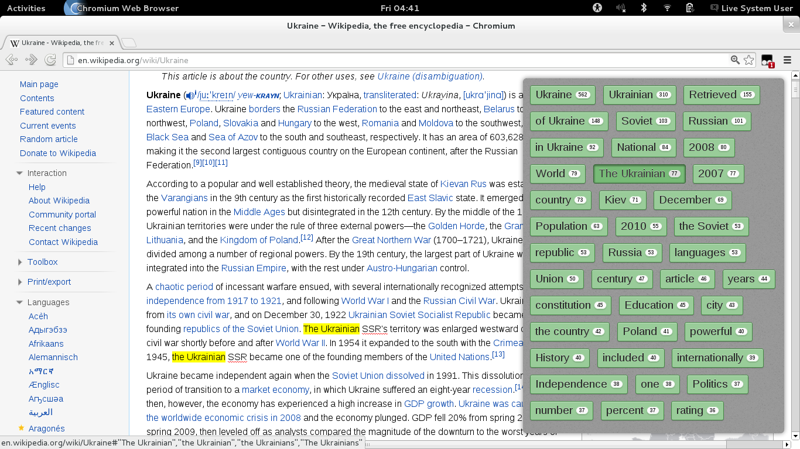

Show Me, Don't Tell Me!
Two simple steps required to start using TagsOnFlags:
- Install Greasemonkey addon in your browser.
- Install TagsOnFlags UserScript by One-Click.
Here is a bit more description about Greasemonkey, UserScripts and installation process. That's it! You'll find new TagsOnFlags button injected in bottom-right corner across every page loaded - just like this:


Cool :) But it's not all. As there is a regular button ^_^, of course we can Click at it !


So what is happening here ?
- Plain text extracted from page HTML using jQuery.
- Text language identificated and visualised by flag.
- Text analysis process started in background.
Background calculations process can be stopped at any time by clicking the button again. Also sometimes we don't want to analyze whole page content - in that case it is possible to do selection for interesting fragment, thus ignoring text out of selection:


After analyzing process finished, additional sidebar appears showing most relatively texts fragments found in a given text, sorted by their total occurrence number. Yeah, this is very similar with wide known tag cloud. Snowball stemming algorithm was used here to find similar texts fragments:


Sidebar Navigation
- Next tags page: Ctrl + Right Mouse click on sidebar.
- First tags page: Shift + Right Mouse click on sidebar.
- Close sidebar: Right Mouse click on sidebar.
- Highlight tag in page: Right Mouse click on it.


Recipes - Good to Know
Show JavaScript console / log output.CTRL + SHIFT + JCTRL + SHIFT + DELETEBy default GreaseMonkey doesn't work with local files. This option is configurable.
Each modern browser suspends JavaScript execution for all tabs, except visible one. But it is still possible to move a tab into a new window (usially by click and drag on it) and continue text analysis process while browsing other useful web pages.